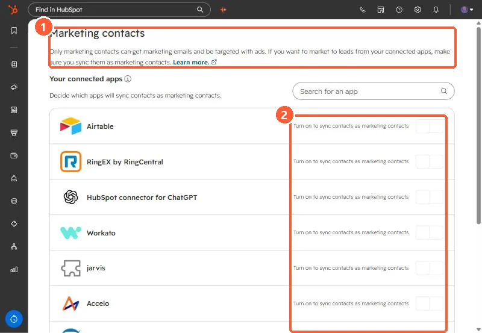

Short answer
Only marketing contacts can receive marketing email and be targeted with ads. HubSpot says apps that sync contacts set them as non-marketing by default. In Settings, Integrations, Marketing Contacts, turn on the toggle for each app that should create marketing contacts. All new marketing contacts count toward your billable tier. Every app in my demo is off.
1. The setting
Open Marketing Contacts settings.


The page lists every connected app that syncs contacts, with a toggle labeled Turn on to sync contacts as marketing contacts.
2. Before you turn one on
- Every new marketing contact counts toward your billable contact tier.
- It applies to apps connected through OAuth or the App Marketplace.
- It affects new contacts from that app. Existing contacts keep their status.
For one contact you want to stop emailing, see opt a contact out of all email.